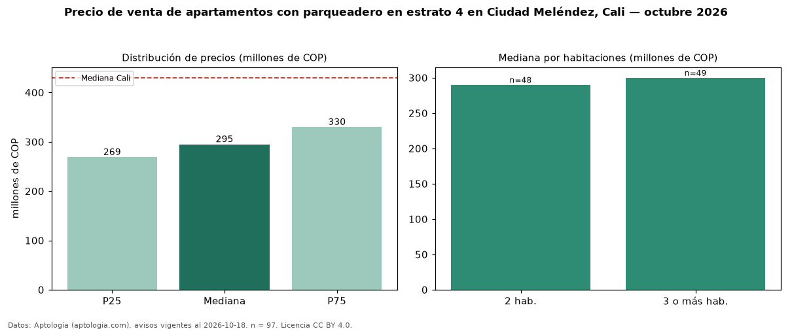

Precio de venta de apartamentos con parqueadero en estrato 4 en Ciudad Meléndez, Cali — octubre 2026
En Ciudad Meléndez, Cali, la mediana de precio de venta de apartamentos con parqueadero en estrato 4 es COP 295 millones, según 97 avisos vigentes. Frente a la mediana de los apartamentos en estrato 4 en venta de Ciudad Meléndez (COP 264 millones, n = 207), queda 12 % por encima; este segmento reúne el 47 % de esos avisos. Por metro cuadrado, la mediana es COP 4,57 millones/m² (n = 97), 6 % por encima de los apartamentos en estrato 4 en venta de Ciudad Meléndez (COP 4,33 millones/m²). El área mediana anunciada es 65 m². El segmento con más oferta es el de 3 o más habitaciones (49 avisos, mediana COP 300 millones); pasar de 2 habitaciones a 3 o más habitaciones cambia la mediana +3 %. La administración mediana declarada es COP 281.220 al mes (n = 81). La mediana de todos los apartamentos en venta de Cali es COP 430 millones (−31 % de diferencia). La mitad central de los avisos va de COP 269 millones a COP 330 millones (razón 1,2), una dispersión baja. Datos: Aptología (aptologia.com), CC BY 4.0 — https://www.aptologia.com/venta/cali/ciudad-melendez. Archivos: PDF, CSV con las cifras y gráfica PNG.

| Avisos únicos | 97 |
|---|---|
| Percentil 25 | COP 269.000.000 |
| Mediana | COP 295.000.000 |
| Percentil 75 | COP 330.000.000 |
| Mediana por m² | COP 4.573.643 |
Fuente: avisos vigentes de portales inmobiliarios recopilados por Aptología, deduplicados (mínimo 30 avisos únicos por celda). Precios pedidos, no cerrados. Fecha: 2026-10-18.